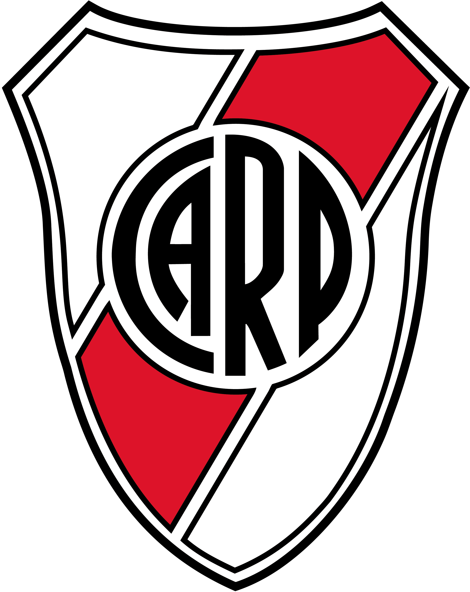
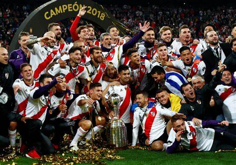
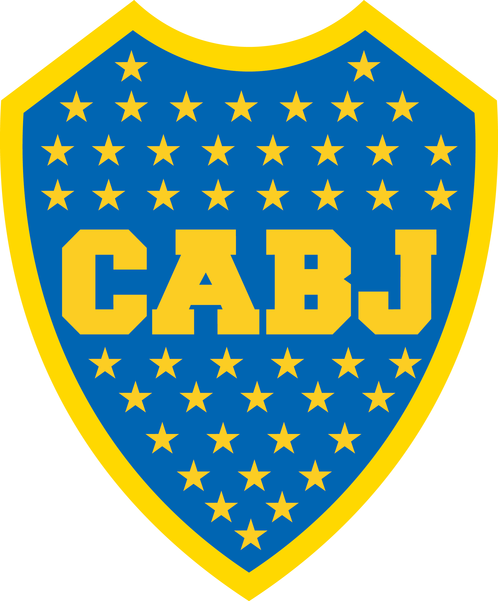
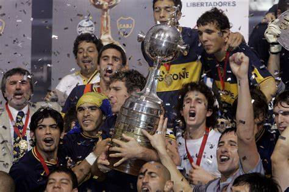
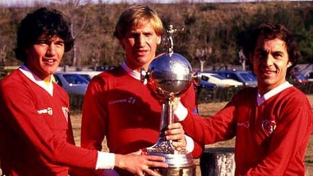

Los 3 clubes mas grandes de Argentina
River:

River fue fundado el 25 de mayo de 1901.
Su apodo es "El Millonario".
Actualmente su Presidente es Jorge Brito y su entrenador Martin Demichelis.
En sus vitrinas tiene:
- 37 Campeonatos Locales
- 3 Copas Argentinas
- 4 Copas Libertadores
- 1 Copa Intercontinental
- 1 Copa Sudamericana
- 3 Recopas Sudamericanas
Los maximos idolos de River son:
- Marcelo Gallardo
- Angel Labruna
- Enzo Francescoli
- Ariel Ortega
- Norberto Alonso

Boca:

Boca fue fundado el 3 de abril de 1905.
Su apodo es "El Xeneize".
Actualmente su Presidente es Jorge Ameal y su entrenador Jorge Almiron.
En sus vitrinas tiene:
- 34 Campeonatos Locales
- 4 Copas Argentinas
- 6 Copas Libertadores
- 3 Copa Intercontinental
- 2 Copa Sudamericana
- 4 Recopas Sudamericanas
Los maximos idolos de Boca son:
- Juan Roman Riquelme
- Martin Palermo
- Carlos Bianchi
- Carlos Tevez
- Diego Maradona

Independiente:

Independiente fue fundado el 1 de enero de 1904 .
Su apodo es "El Rojo".
Actualmente su Presidente es Nestor Grindetti y su entrenador Ricardo Zielinski .
En sus vitrinas tiene:
- 16 Campeonatos Locales
- 0 Copas Argentinas
- 7 Copas Libertadores
- 2 Copa Intercontinental
- 2 Copa Sudamericana
- 1 Recopas Sudamericanas
Los maximos idolos de Indenpendiente son:
- Ricardo Bochini
- Arsenio Erico
- Jorge Burruchaga
- Vicente De La Mata
- Antonio Sastre
